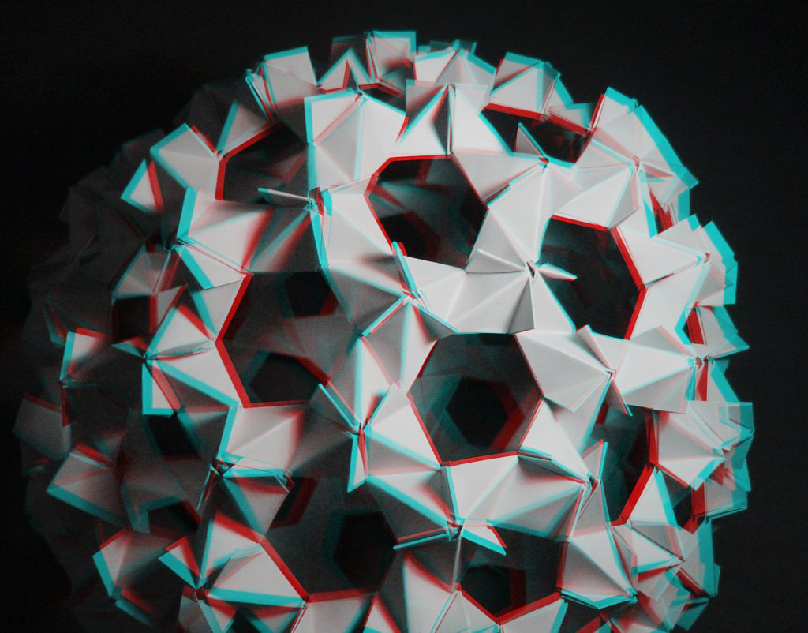
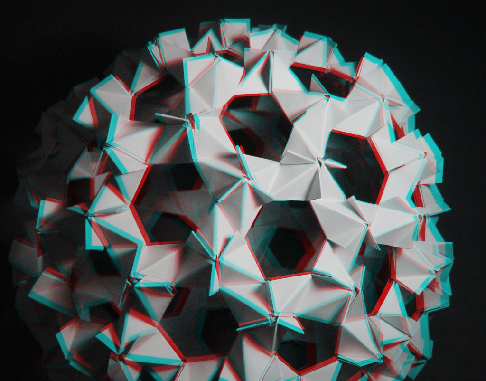

Ah yes, another one of my projects that satisfies my inexplicable desire to hide my face/replace it with something cooler. You know, like Daft Punk. Were it not social suicide, I would totally wear really awesome helmets all the time. (Though Maggie has been trying to convince me to do it anywyas.) Ideally, I'd actually be a faceless android that emotes solely through an electronic display, but until the day comes, I'll continue pretending to be one.
So that's why I'm dressing up as Zer0. Also because the juxtapositon of their "mysterious badass ninja assassin" appearance with their "fight-me edgelord meme weeb" personality is absolutely sublime. (And yes, I say "their" because Zer0 is genderless.) Unfortunately, I don't have the body type to properly cosplay Zer0, so I just stuck with the helmet. I'm not a cosplay purist by any means, but I still hold myself to ridiculously high standards. I mean, no kill like overkill, right?
My friend recently bought a 3D printer (that promptly committed suicide after less than 72 hours after unboxing). I knew he'd get another one or get it repaired, so I began plans to print a model of Zer0's helmet. I learned to used Blender, a really useful 3D modeling software, as well as how to print using FDM and SLA printers.

This helmet is snug. You can really see how closely it follows the curvatures of the skull, meaning there's almost no room for any sort of padding on the inside. The only way to make such a form-fitting helmet wearable is to assemble it around your head. In order to prevent making highly visible seams in the helmet, I followed existing ones. The final design is two separate pieces (plus visor) that magnetically lock together, which just ups the cool factor by at least 10.
Due to how snug this helmet is, I wanted to make a bust of myself to make the whole process more convenient. I ancipated making a lot more helmets and face-obscuring headgear, too, so I figured this would be a good investment anyways. You can read about the process here.
The helmet was 3D printed and finished with several rounds of filler, primer, and sanding. What a pain! The last layer was a layer of spray PlastiDip, becasue I absolutely adore the texture of that stuff. I considered casting it in one solid piece of plastic but decided the costs were too high for a one-off build. I'd probably be interested if I were doing production. If I get enough requests, perhaps I will do that and sell some.
The sides of the helmet are black tulle over steel mesh for ventilation.
The inside of the helmet was lined with neoprene for marginal padding
I wanted the visor to be crystal clear, but still have a nice sturdy weight to it, which eliminated a lot of plastics commonly used in propmaking. A lot of people use PETG, which is crystal clear at first, but it loses its optical clarity after forming unless you're really good, so I scrapped that idea. I debated between acrylic and polycarbonate for a while, but eventually settled on acrylic's scratch resistance over polycarbonate's impact resistance. I just have to make sure I don't drop it.
Most tutorials dye the parts after vacuum formimg, but I thought it would be easier to do the dying process first, as I would need a lesser volume of water to submerge the acrylic in, and I would be able to achieve higher dye concentrations. I tested this on a small piece of acrylic first to make sure the dye wouldn't decompose at vacuum forming temperatures.
The visor is an 12" x 24" piece of 0.093" clear extruded acrylic vacuformed over a 3D printed part, as these types of parts usually are. It's very important that the acrylic is extruded, not cast, as cast acrylic does not vacuum form well at all.
I felt pretty bad about marring such a beautiful piece of plastic, so I opted for making two versions of the visor, one scuffed and one clean.
My favorite things about the visor is that it is dual-hinged with the body of the helmet, meaning that I don't have to take my helmet off to eat or scratch my face, and it looks super awesome when I open the visor. For this, I just followed one of the myriad available tutorials for mechanical Iron Man helmets.
I still wanted to maintain a full skin cover with this helmet, which meant constructing the piece to cover the neck. This part is continuous with the cloth that also covers the head, creating an sort of open faced balaclava. This is essentially a scuba hood, but I wanted breathability too. I dissected a scuba hood


 
